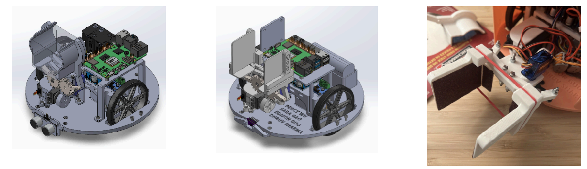

Maze Finding Robot

Overview
A robotic rover that autonomously navigates a maze, picks up a 0.5 lb wood block at the loading zone, and delivers it to designated locations.
What I did
- Conceptualized and designed the robotic rover, from maze navigation to block pickup and delivery.
- Designed a high-precision gripping mechanism in SolidWorks, achieving a 100% block pickup success rate across varied operating conditions.
- Designed and optimized structural components (base plate, cover, component mounts, and drivetrain layout) for manufacturability, balanced weight distribution, and operational stability.
Design

CAD renders of the internal layout and gripper assembly, and the finished gripper mechanism.
Tools
SolidWorks